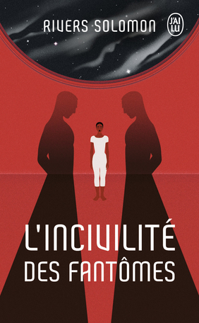

En ce mois de mai, synonyme de retour timide à une forme de vie sociale entre deux averses de grêle, j’ai enfin terminé la trilogie des Livres de la Terre fracturée (pour en dire beaucoup de bien ici). En prime, la lecture m’a emmené voyager loin dans l’espace, ainsi qu’au Japon. Difficile de dire lequel était le plus dépaysant des deux.
Commençons par L’incivilité des fantômes, le premier roman de Rivers Solomon. Paru en français en 2019, on y embarque dans un vaste vaisseau spatial dans lequel vit une partie de l’humanité (ou ce qu’il en reste). La société qu’on y découvre est profondément raciste : les Noirs, réduits en esclavage, y travaillent aux tâches les plus difficiles et avilissantes tout en subissant la violence quotidienne des Blancs. Aster, très compétente en botanique et en médecine, cherche par ailleurs à y décrypter les écrits de sa mère défunte. Elle peut notamment compter sur son imprévisible amie Giselle, ainsi que sur un personnage à la fois critique et proche du pouvoir, Théo. Tant ses difficultés de communication (le mot autisme n’est jamais écrit, mais on le devine) que des traumatismes passés - et présents - pèsent sur Aster, mais ne l’empêchent pas d’oeuvrer à sa façon contre un pouvoir de plus en plus en oppresseur. Ce roman est peut-être plus intéressant pour le développement de ses personnages et leurs relations complexes que pour son intrigue, mais n’en reste pas moins très réussi.
Pour changer de la science-fiction, je me suis ensuite tourné vers la non-fiction, avec Le dernier des yakuzas, du journaliste américain Jake Adelstein. De ce dernier, j’avais déjà beaucoup aimé Tokyo Vice, dans lequel il raconte ses débuts dans un grand journal japonais et ses premiers contacts avec la criminalité organisée du pays (donc les yakuzas). Dans ce livre-ci, le journaliste rédige carrément la biographie d’un ancien yakuza en échange de la protection de ce dernier, laquelle est nécessaire suite aux événements relatés dans Tokyo Vice. Et c’est passionnant. A travers le parcours chaotique de Saigo, attaché au respect du code d’honneur, on revient sur toute l’histoire contemporaine de ces groupes très organisés dont l’influence est saisissante, mais déclinante. C’est riche en paradoxes, subtil quoique souvent violent, et raconté de manière à ce qu’on veuille toujours en savoir davantage. Si je devais chipoter, j’évoquerais quelques coquilles surprenantes et l’un ou l’autre passage peu clairs, mais je n’en ai pas moins adoré cette lecture.
En parallèle, j’avance toujours petit à petit dans Please Kill Me: L’histoire non censurée du punk racontée par ses acteurs et, une fois n’est pas coutume, je me suis jeté sur un livre tout fraichement sorti : Numérique : Brevis est, de Marina & Sergueï Diatchenko. Difficile de ne pas y aller sans hésiter après la claque étrange que fut Vita Nostra, des mêmes auteurs.